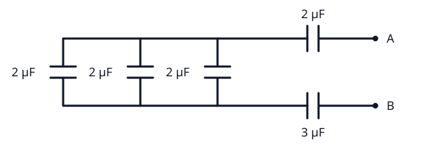

50 verified JAMB Physics questions
Physic.zip / JAMB-PHYSICS-PAST-QUESTIONS.pdf. Teacher review pending.
phys-jamb-2011-015 · JAMB 2011 Q15 · PDF p. 15 · Ch. 7 · Archimedes’ principle and flotation
An object gives a scale reading equivalent to 22 kg when immersed in water and 30 kg when weighed in air. What upthrust does the liquid exert? Take g = 10 m s−2.
A. 80 N
The readings correspond to 300 N in air and 220 N in water. The upthrust is their difference, 80 N.
B. 50 N
50 N would correspond to a 5 kg change in the scale reading.
C. 520 N
520 N is the sum of the readings.
D. 220 N
220 N is the apparent weight in water.
The readings correspond to 300 N in air and 220 N in water. The upthrust is their difference, 80 N.
⚠ The trap
220 N is the apparent weight in water.
Remember it
Upthrust equals the loss of apparent weight.
phys-jamb-2011-041 · JAMB 2011 Q41 · PDF p. 19–20 · Ch. 24 · Half-life and decay constant
A radioactive isotope has a decay constant of 10−5 s−1. Calculate its half-life.
A. 6.93 × 10
4 s
Use t1/2 = ln 2 ÷ λ. With λ = 10−5 s−1, t1/2 = 6.93 × 104 s.
B. 6.93 × 10
−6 s
Multiplying by λ gives the wrong dimensions and a much shorter time.
C. 6.93 × 10
−5 s
The small decay constant belongs in the denominator.
D. 6.93 × 10
5 s
This time is ten times the result of dividing 0.693 by λ.
Use t1/2 = ln 2 ÷ λ. With λ = 10−5 s−1, t1/2 = 6.93 × 104 s.
⚠ The trap
Multiplying by λ gives the wrong dimensions and a much shorter time.
Remember it
A small decay constant means a long half-life.
phys-jamb-2012-002 · JAMB 2012 Q2 · PDF p. 22 · Ch. 1 · Measuring instruments, errors and significant figures
In order to remove the error of parallax when taking measurements with a metre rule, the eye should be focused
A. slantingly towards the left on the markings
A leftward slant shifts the apparent reading.
B. slantingly towards the right on the markings
A rightward slant also produces parallax.
C. vertically downwards on the markings
Look directly down along the normal to the scale. A sideways viewing angle shifts the apparent alignment of the mark and the object.
D. vertically upwards on the markings
Look down from above the scale rather than up from below it.
Look directly down along the normal to the scale. A sideways viewing angle shifts the apparent alignment of the mark and the object.
⚠ The trap
A leftward slant shifts the apparent reading.
Remember it
Eye straight above the graduation.
phys-jamb-2012-003 · JAMB 2012 Q3 · PDF p. 22 · Ch. 6 · Static and kinetic friction
A rope at 45° to a horizontal floor pulls a load along the floor at uniform speed. If the tension is 1500 N, what is the frictional force on the load?
A. 1524 N
The horizontal component cannot exceed the total 1500 N pull.
B. 1350 N
1350 N uses a projection factor of 0.90 rather than cos 45°.
C. 1260 N
1260 N uses a projection factor of 0.84 rather than cos 45°.
D. 1061 N
The load has no horizontal acceleration. Friction balances the horizontal component of the pull, 1500 cos 45° ≈ 1061 N.
The load has no horizontal acceleration. Friction balances the horizontal component of the pull, 1500 cos 45° ≈ 1061 N.
⚠ The trap
The horizontal component cannot exceed the total 1500 N pull.
Remember it
Uniform speed on a straight path means the horizontal forces balance.
phys-jamb-2012-007 · JAMB 2012 Q7 · PDF p. 23 · Ch. 2 · Uniform acceleration
A car starts from rest and moves with a uniform acceleration of 30 m s−2 for 20 s. How far does it travel?
A. 6 km
Since u = 0, s = ½at2 = ½ × 30 × 202 = 6000 m, or 6 km.
B. 12 km
12 km uses the final speed throughout the 20 s.
C. 18 km
18 km is three times the displacement for the given acceleration.
D. 24 km
24 km is four times the displacement for 20 s.
Since u = 0, s = ½at2 = ½ × 30 × 202 = 6000 m, or 6 km.
⚠ The trap
12 km uses the final speed throughout the 20 s.
Remember it
From rest under constant acceleration, average speed is half the final speed.
phys-jamb-2012-010 · JAMB 2012 Q10 · PDF p. 24 · Ch. 4 · Angular motion and centripetal force
An object moves along a circular path of radius 0.5 m at 1 m s−1. What is its angular velocity?
A. 8 rad s
−18 rad s−1 at this radius would give 4 m s−1.
B. 4 rad s
−14 rad s−1 would give 2 m s−1.
C. 2 rad s
−1The relation v = rω gives ω = 1 ÷ 0.5 = 2 rad s−1.
D. 1 rad s
−11 rad s−1 would give 0.5 m s−1.
The relation v = rω gives ω = 1 ÷ 0.5 = 2 rad s−1.
⚠ The trap
1 rad s−1 would give 0.5 m s−1.
Remember it
Angular speed is linear speed divided by radius.
phys-jamb-2012-015 · JAMB 2012 Q15 · PDF p. 25 · Ch. 6 · Hooke’s law and Young’s modulus
A mass of 1 kg stretches a cord by 1.2 cm. What is the force constant of the cord? Take g = 10 m s−2.
A. 866 N m
−1866 N m−1 would give about 10.4 N at this extension.
B. 833 N m
−1The weight is 1 × 10 = 10 N and the extension is 0.012 m. Hooke’s law gives k = 10 ÷ 0.012 ≈ 833 N m−1.
C. 769 N m
−1769 N m−1 would give about 9.23 N.
D. 667 N m
−1667 N m−1 would give about 8.00 N.
The weight is 1 × 10 = 10 N and the extension is 0.012 m. Hooke’s law gives k = 10 ÷ 0.012 ≈ 833 N m−1.
⚠ The trap
769 N m−1 would give about 9.23 N.
Remember it
For k = F ÷ x, use newtons and metres.
phys-jamb-2012-018 · JAMB 2012 Q18 · PDF p. 25 · Ch. 7 · Archimedes’ principle and flotation
A balloon of volume 300 m3 is filled with hydrogen. If the density of air is 1.3 kg m−3, find the upthrust on the balloon. Take g = 10 m s−2.
A. 3000 N
3000 N treats the air density as 1.0 kg m−3.
B. 3800 N
3800 N is below the weight of the displaced air.
C. 3900 N
The upthrust equals the weight of 300 m3 of displaced air, 1.3 × 300 × 10 = 3900 N.
D. 4200 N
4200 N would require an air density of 1.4 kg m−3.
The upthrust equals the weight of 300 m3 of displaced air, 1.3 × 300 × 10 = 3900 N.
⚠ The trap
3000 N treats the air density as 1.0 kg m−3.
Remember it
Buoyancy depends on the displaced fluid.
phys-jamb-2012-021 · JAMB 2012 Q21 · PDF p. 26 · Ch. 9 · Absolute zero and the ideal gas equation
A 2000 cm3 sample of gas is collected at 27°C and 700 mmHg. What volume will it occupy at standard temperature and pressure?
A. 1896.5 cm
3This value is too high after both cooling and compression.
B. 1767.3 cm
3This value does not satisfy P₁V₁/T₁ = P₂V₂/T₂.
C. 1676.3 cm
3For a fixed amount of gas, PV/T is constant. At 273 K and 760 mmHg, the volume is 2000 × (700/760) × (273/300) ≈ 1676.3 cm3.
D. 1456.5 cm
3This value is too low for the given pressure and temperature changes.
For a fixed amount of gas, PV/T is constant. At 273 K and 760 mmHg, the volume is 2000 × (700/760) × (273/300) ≈ 1676.3 cm3.
⚠ The trap
This value is too high after both cooling and compression.
Remember it
A closed gas sample keeps PV/T constant.
phys-jamb-2012-025 · JAMB 2012 Q25 · PDF p. 27 · Ch. 9 · Molecular structure, diffusion and Brownian motion
Which statements describe Brownian motion? I. Tiny suspended particles move rapidly, continually and irregularly. II. It provides evidence for molecules. III. It occurs only in gases. IV. It provides evidence that molecules are in constant random motion.
A. I, II and III
I and II fit, but III incorrectly limits the effect to gases.
B. II, III and IV only
II and IV fit, but III is false and I is true.
C. I, III and IV only
I and IV fit, but molecules exist in liquids and produce the same effect there.
D. I, II and IV only
Tiny suspended particles are continually hit from different directions by moving molecules. Their irregular motion is evidence for molecules and their random motion. It occurs in liquids and gases, so I, II and IV hold.
Tiny suspended particles are continually hit from different directions by moving molecules. Their irregular motion is evidence for molecules and their random motion. It occurs in liquids and gases, so I, II and IV hold.
⚠ The trap
I and II fit, but III incorrectly limits the effect to gases.
Remember it
Brownian motion is the visible result of random molecular collisions.
phys-jamb-2012-030 · JAMB 2012 Q30 · PDF p. 28 · Ch. 14 · Curved mirrors, image formation and magnification
Where should someone place their face to get an enlarged image in a concave shaving mirror?
A. Between the centre of curvature and the principal focus
Between F and C the image is enlarged but real and inverted.
B. At the principal focus
At F the reflected rays are parallel, with the image at infinity.
C. Between the principal focus and the pole
A face placed between the pole and the principal focus produces an enlarged, upright virtual image behind the concave mirror.
D. At the centre of curvature
At C the image is real, inverted and the same size.
A face placed between the pole and the principal focus produces an enlarged, upright virtual image behind the concave mirror.
⚠ The trap
Between F and C the image is enlarged but real and inverted.
Remember it
Inside the focus gives the upright magnified view.
phys-jamb-2012-041 · JAMB 2012 Q41 · PDF p. 30 · Ch. 20 · Magnetic force on charges and conductors
A particle carrying a charge of 1.0 × 10−8 C moves at 3.0 × 102 m s−1 perpendicular to a magnetic field. If the field exerts a force of 1.8 × 10−8 N on the particle, what is the field strength?
A. 6.0 × 10
−1 T
This is 100 times the computed field.
B. 6.0 × 10
−2 T
This is ten times the computed field.
C. 6.0 × 10
−3 T
Use F = qvB, so B = (1.8 × 10−8) ÷ [(1.0 × 10−8)(3.0 × 102)] = 6.0 × 10−3 T.
D. 6.0 × 10
−4 T
This is a tenth of the computed field.
Use F = qvB, so B = (1.8 × 10−8) ÷ [(1.0 × 10−8)(3.0 × 102)] = 6.0 × 10−3 T.
⚠ The trap
This is ten times the computed field.
Remember it
For perpendicular motion, magnetic force is charge times speed times field.
phys-jamb-2012-043 · JAMB 2012 Q43 · PDF p. 30–31 · Ch. 21 · Peak and RMS values
The current output form of an a.c. source is given as I = 10 sin ωt. The d.c. equivalent of the current is
A. 5.0 A
The RMS factor is 1/√2 rather than one half.
B. 7.1 A
The sine coefficient is the peak current of 10 A. The RMS current is 10/√2, about 7.1 A.
C. 10.0 A
10 A is the peak value.
D. 14.1 A
14.1 A multiplies the peak by √2 and would exceed the peak.
The sine coefficient is the peak current of 10 A. The RMS current is 10/√2, about 7.1 A.
⚠ The trap
10 A is the peak value.
Remember it
For a sine wave, RMS = peak ÷ √2.
phys-jamb-2013-003 · JAMB 2013 Q3 · PDF p. 33 · Ch. 1 · Vector addition and resolution
The resultant of two forces is 50 N. If the forces are perpendicular to each other and one of them makes an angle of 30° with the resultant, find its magnitude.
A. 100.0 N
A perpendicular component is shorter than the 50 N resultant.
B. 57.7 N
Dividing by cos 30° would treat 50 N as the adjacent component.
C. 43.3 N
The component at 30° to the resultant is adjacent to that angle. Its magnitude is 50 cos 30° ≈ 43.3 N.
D. 25.0 N
25 N is the other component, opposite the 30° angle.
The component at 30° to the resultant is adjacent to that angle. Its magnitude is 50 cos 30° ≈ 43.3 N.
⚠ The trap
25 N is the other component, opposite the 30° angle.
Remember it
Adjacent components use cosine.
phys-jamb-2013-008 · JAMB 2013 Q8 · PDF p. 34 · Ch. 7 · Archimedes’ principle and flotation
A piece of cork floats in a liquid. What fraction of its volume is immersed? The cork and liquid have densities of 0.25 × 103 kg m−3 and 1.25 × 103 kg m−3, respectively.
A. 0.8
0.8 is the fraction above the surface.
B. 0.5
Half immersion would require the cork to be half as dense as the liquid.
C. 0.2
For flotation, ρcorkVg = ρliquidVsubg. The immersed fraction is 0.25 ÷ 1.25 = 0.20.
D. 0.1
0.1 would require the cork to have one-tenth of the liquid density.
For flotation, ρcorkVg = ρliquidVsubg. The immersed fraction is 0.25 ÷ 1.25 = 0.20.
⚠ The trap
0.8 is the fraction above the surface.
Remember it
Floating fraction below the surface equals object density divided by liquid density.
phys-jamb-2013-010 · JAMB 2013 Q10 · PDF p. 34 · Ch. 5 · Mechanical power
A pump lifts 5000 kg of water through a vertical height of 60 m in 15 minutes. What is its useful output power? Take g ≈ 10 m s−2.
A. 2.5 × 10
5 W
This power would supply far too much energy in 900 s.
B. 2.5 × 10
4 W
2.5 × 104 W would deliver 2.25 × 107 J in 900 s.
C. 3.3 × 10
3 W
Using g ≈ 10 m s−2, the pump does 5000 × 10 × 60 = 3.0 × 106 J of lifting work in 900 s. Its useful power is about 3.3 × 103 W.
D. 3.3 × 10
2 W
3.3 × 102 W is ten times too small and is close to the result of omitting g.
Using g ≈ 10 m s−2, the pump does 5000 × 10 × 60 = 3.0 × 106 J of lifting work in 900 s. Its useful power is about 3.3 × 103 W.
⚠ The trap
3.3 × 102 W is ten times too small and is close to the result of omitting g.
Remember it
Lifting power is mgh divided by time in seconds.
phys-jamb-2013-011 · JAMB 2013 Q11 · PDF p. 34 · Ch. 6 · Static and kinetic friction
What is the coefficient of friction between two perfectly smooth surfaces in the ideal model?
A. infinity
An infinite coefficient would imply unlimited resistance to sliding.
B. one
A coefficient of one would make limiting friction equal to the normal force.
C. half
One half would still imply a nonzero friction force.
D. zero
Perfectly smooth surfaces are treated as frictionless in this model. The ratio of limiting friction to normal force is therefore zero.
Perfectly smooth surfaces are treated as frictionless in this model. The ratio of limiting friction to normal force is therefore zero.
⚠ The trap
One half would still imply a nonzero friction force.
Remember it
In the ideal school model, perfectly smooth means frictionless.
phys-jamb-2013-013 · JAMB 2013 Q13 · PDF p. 35 · Ch. 6 · Elastic strain energy
Calculate the work done when a force of 20 N stretches a spring by 50 mm.
A. 0.5 J
For a Hookean spring, the average stretching force is half the final force. The work is ½ × 20 × 0.050 = 0.5 J.
B. 1.5 J
This is three times the triangular area under the force–extension graph.
C. 2.0 J
This would require a much larger average force over 50 mm.
D. 2.5 J
This exceeds even the work at a constant 20 N over 50 mm.
For a Hookean spring, the average stretching force is half the final force. The work is ½ × 20 × 0.050 = 0.5 J.
⚠ The trap
This exceeds even the work at a constant 20 N over 50 mm.
Remember it
The area under a linear force–extension graph is a triangle.
phys-jamb-2013-017 · JAMB 2013 Q17 · PDF p. 35–36 · Ch. 8 · Linear, area and volume expansion
A wire is 100.0 m long at 30°C. Its linear expansivity is 2 × 10−5 K−1. What is its length at −10°C?
A. 100.08 m
This treats a temperature drop as a rise.
B. 100.04 m
This gives an expansion and uses too small a temperature change.
C. 99.96 m
A contraction of 0.04 m would correspond to a 20°C drop.
D. 99.92 m
The temperature changes by −40°C. The length change is 100 × (2 × 10−5) × (−40) = −0.08 m, giving 99.92 m.
The temperature changes by −40°C. The length change is 100 × (2 × 10−5) × (−40) = −0.08 m, giving 99.92 m.
⚠ The trap
This treats a temperature drop as a rise.
Remember it
Use final temperature minus initial temperature.
phys-jamb-2013-024 · JAMB 2013 Q24 · PDF p. 37 · Ch. 11 · Conduction, thermal conductivity and heat flux
The mechanism of heat transfer from one point to another through the vibration of the molecules of the medium is
A. convection
Convection transports energy with the bulk motion of a fluid.
B. conduction
In conduction, energy passes between neighbouring particles through interactions, without large-scale motion of the material.
C. radiation
Radiation can transfer energy through a vacuum.
D. diffusion
Diffusion describes the spreading of particles.
In conduction, energy passes between neighbouring particles through interactions, without large-scale motion of the material.
⚠ The trap
Convection transports energy with the bulk motion of a fluid.
Remember it
Conduction transfers energy through stationary material.
phys-jamb-2013-034 · JAMB 2013 Q34 · PDF p. 39 · Ch. 15 · Microscopes, telescopes and projectors
If the linear magnification of the objective and eyepiece convex lenses of a compound microscope are 4 and 7 respectively, calculate the angular magnification of the microscope.
A. 2
Dividing the magnifications misses the second stage’s multiplication.
B. 3
Subtracting the two factors does not give the combined magnification.
C. 11
Adding 4 and 7 treats successive magnifications as additive.
D. 28
In the usual school model, the compound microscope’s magnification is the product of the objective and eyepiece magnifications, 4 × 7 = 28.
In the usual school model, the compound microscope’s magnification is the product of the objective and eyepiece magnifications, 4 × 7 = 28.
⚠ The trap
Adding 4 and 7 treats successive magnifications as additive.
Remember it
Compound microscope magnification is the product of the two stages.
phys-jamb-2015-006 · JAMB 2015 Q6 · PDF p. 54 · Ch. 12 · Reflection, refraction, diffraction and polarisation
Longitudinal waves do not exhibit
A. refraction
Longitudinal waves such as sound can refract.
B. polarization
Longitudinal vibrations are parallel to propagation. Polarisation selects a direction of transverse vibration, so a longitudinal wave cannot be polarised.
C. diffraction
Sound can diffract around an obstacle or through an opening.
D. reflection
Sound reflects, producing echoes.
Longitudinal vibrations are parallel to propagation. Polarisation selects a direction of transverse vibration, so a longitudinal wave cannot be polarised.
⚠ The trap
Longitudinal waves such as sound can refract.
Remember it
Polarisation singles out transverse waves.
phys-jamb-2015-011 · JAMB 2015 Q11 · PDF p. 55 · Ch. 21 · Generators, transformers and induction coils
What energy conversion does a dynamo perform?
A. potential energy into kinetic energy
A dynamo needs mechanical input and delivers electrical energy.
B. electrical energy into kinetic energy
Electrical energy driving motion describes a motor.
C. mechanical energy into electrical energy
A dynamo uses mechanical rotation to change magnetic flux and induce an electrical output.
D. kinetic energy into potential energy
The turning input generates electricity rather than storing potential energy.
A dynamo uses mechanical rotation to change magnetic flux and induce an electrical output.
⚠ The trap
Electrical energy driving motion describes a motor.
Remember it
Generator: motion in, electricity out.
phys-jamb-2015-016 · JAMB 2015 Q16 · PDF p. 56 · Ch. 23 · Thermionic and photoelectric emission
The photocell works on the principle of the
A. voltaic cell
A voltaic cell produces electrical energy from chemical reactions.
B. photographic plate
A photographic plate records a chemical change in a light-sensitive coating.
C. emission of protons by incident electrons
The particles emitted here are electrons and the input is light.
D. emission of electrons by incident radiation
A photoelectric cell can use incident radiation to eject electrons from a photosensitive surface. The released charge can then produce a current.
A photoelectric cell can use incident radiation to eject electrons from a photosensitive surface. The released charge can then produce a current.
⚠ The trap
A photographic plate records a chemical change in a light-sensitive coating.
Remember it
Photoemission is light in, electrons out.
phys-jamb-2015-018 · JAMB 2015 Q18 · PDF p. 56 · Ch. 13 · Echoes and reverberation
Which of the following characteristics of a wave is used in the measurement of the depth of the sea?
A. Diffraction
Diffraction spreads a wave around edges and does not produce the timed echo.
B. Reflection
Echo sounding times a sound pulse and its reflection from the seabed. The return time measures a round trip.
C. Refraction
Refraction changes direction when wave speed changes.
D. Interference
Interference is the combination of overlapping waves.
Echo sounding times a sound pulse and its reflection from the seabed. The return time measures a round trip.
⚠ The trap
Refraction changes direction when wave speed changes.
Remember it
Echo depth is sound speed times round-trip time divided by two.
phys-jamb-2015-022 · JAMB 2015 Q22 · PDF p. 57 · Ch. 16 · Dispersion and rainbows
Which of the following pairs of colours gives the widest separation in the spectrum of white light?
A. Green and Yellow
Green and yellow are adjacent.
B. Red and violet
Red and violet are the two extremes of the visible spectrum in prism dispersion. Their deviations are therefore furthest apart.
C. Red and indigo
Indigo is closer to red than violet is in the spectral order.
D. Yellow and violet
Yellow is closer to violet than red is in the spectral order.
Red and violet are the two extremes of the visible spectrum in prism dispersion. Their deviations are therefore furthest apart.
⚠ The trap
Indigo is closer to red than violet is in the spectral order.
Remember it
Red deviates least and violet most in a glass prism.
phys-jamb-2015-030 · JAMB 2015 Q30 · PDF p. 59 · Ch. 8 · Density and volume during melting
What is the magnitude of the change in volume when 450 kg of ice melts completely? The densities of ice and water are 900 kg m−3 and 1000 kg m−3, respectively.
A. 0.50 m
30.50 m3 is the initial volume.
B. 0.45 m
30.45 m3 is the final volume.
C. 4.50 m
34.50 m3 is larger than either volume.
D. 0.05 m
3The ice takes up 450/900 = 0.50 m3. The water takes up 450/1000 = 0.45 m3. The volume decreases by 0.05 m3.
The ice takes up 450/900 = 0.50 m3. The water takes up 450/1000 = 0.45 m3. The volume decreases by 0.05 m3.
⚠ The trap
0.45 m3 is the final volume.
Remember it
Mass stays fixed, so compare the two volumes m/ρ.
phys-jamb-2015-032 · JAMB 2015 Q32 · PDF p. 59 · Ch. 23 · Thermionic and photoelectric emission
The process through which free electrons leave the hot surface of hot metal is known as
A. photo emission
Photoemission is driven by incident light.
B. thermionic emission
Heating the metal gives some electrons enough energy to escape its surface. This is thermionic emission.
C. photon emission
Photon emission releases light, rather than free electrons.
D. electron emission
Electron emission is general. Thermionic emission names the heat-driven mechanism.
Heating the metal gives some electrons enough energy to escape its surface. This is thermionic emission.
⚠ The trap
Electron emission is general. Thermionic emission names the heat-driven mechanism.
Remember it
Thermionic begins with thermal energy.
phys-jamb-2016-012 · JAMB 2016 Q12 · PDF p. 64 · Ch. 21 · Generators, transformers and induction coils
What is the main purpose of the transformer in an AC radio set?
A. Increase power to the radio
A transformer does not create additional power.
B. Convert AC to DC
Conversion to DC requires a rectifier.
C. Step up the voltage
A step-up transformer increases voltage, whereas the radio’s circuitry generally needs less.
D. Step down the voltage
An AC radio set typically needs a lower AC voltage than the mains supply provides. A step-down transformer supplies it before any rectification stage.
An AC radio set typically needs a lower AC voltage than the mains supply provides. A step-down transformer supplies it before any rectification stage.
⚠ The trap
Conversion to DC requires a rectifier.
Remember it
Step-down changes the AC voltage. Rectification changes AC to DC.
phys-jamb-2016-015 · JAMB 2016 Q15 · PDF p. 64 · Ch. 20 · Magnets, magnetisation and demagnetisation
To protect a material from the influence of an external magnetic field, the material should be kept in a
A. soft iron ring
Soft iron has high magnetic permeability. It can guide much of the external flux through itself and reduce the field in the enclosed space.
B. loop of copper wire
Copper is not a high-permeability shield for a steady magnetic field.
C. triangular zinc ring
Zinc is not a high-permeability shielding material.
D. square steel ring
Steel generally retains magnetisation more readily than soft iron.
Soft iron has high magnetic permeability. It can guide much of the external flux through itself and reduce the field in the enclosed space.
⚠ The trap
Steel generally retains magnetisation more readily than soft iron.
Remember it
Soft iron diverts magnetic flux.
phys-jamb-2016-022 · JAMB 2016 Q22 · PDF p. 66 · Ch. 13 · Harmonics, strings and open and closed pipes
In a closed organ pipe producing a musical note, an antinode will always be produced at
A. the closed end
The rigid closed end prevents displacement of the air.
B. the middle
The midpoint is not always an antinode.
C. the open end
At the open end the air can oscillate with a large displacement, so it is a displacement antinode. The closed end is a displacement node.
D. all the parts of the pipe
A standing wave has separate nodes and antinodes.
At the open end the air can oscillate with a large displacement, so it is a displacement antinode. The closed end is a displacement node.
⚠ The trap
The rigid closed end prevents displacement of the air.
Remember it
Open end: displacement antinode. Closed end: displacement node.
phys-jamb-2016-033 · JAMB 2016 Q33 · PDF p. 68 · Ch. 7 · Atmospheric pressure and barometers
Mercury is suitable as a barometric fluid because it
A. expands uniformly
Uniform expansion can matter in thermometry, but it does not explain the short barometer column.
B. is several times denser than water
For a given pressure, h = P/(ρg). Mercury’s high density lets a barometer balance atmospheric pressure with a comparatively short column.
C. is opaque
Opacity is not what balances the atmospheric pressure.
D. is a good conductor of heat
Heat conduction does not determine the equilibrium column height.
For a given pressure, h = P/(ρg). Mercury’s high density lets a barometer balance atmospheric pressure with a comparatively short column.
⚠ The trap
Uniform expansion can matter in thermometry, but it does not explain the short barometer column.
Remember it
A denser barometer liquid needs a shorter column.
phys-jamb-2016-035 · JAMB 2016 Q35 · PDF p. 68–69 · Ch. 3 · Newton’s laws and types of force
Which option correctly explains the inertia of a body?
A. Reluctance to start moving from rest and to stop moving once in motion
Inertia is resistance to a change in velocity. It applies both when something is at rest and when it is already moving.
B. Reluctance to stop moving
This covers only the case of an object already moving.
C. Readiness to start moving
An object at rest resists the change required to start moving.
D. Reluctance to start moving and readiness to stop moving once in motion
A moving object also resists being brought to rest.
Inertia is resistance to a change in velocity. It applies both when something is at rest and when it is already moving.
⚠ The trap
A moving object also resists being brought to rest.
Remember it
Inertia resists changes to motion, including changes from rest.
phys-jamb-2016-037 · JAMB 2016 Q37 · PDF p. 69 · Ch. 6 · Elastic limit, yield and fracture
What is the name of the point beyond which a stretched spring no longer returns to its original length?
A. Breaking point
The breaking point is where the spring fractures.
B. Spring constant
The spring constant measures stiffness.
C. Elastic limit
The elastic limit is the boundary of reversible deformation. Stretching beyond it can leave the spring permanently longer after unloading.
D. Elasticity point
Elasticity point is not the term for the end of reversible deformation.
The elastic limit is the boundary of reversible deformation. Stretching beyond it can leave the spring permanently longer after unloading.
⚠ The trap
The breaking point is where the spring fractures.
Remember it
Elastic means it returns after unloading.
phys-jamb-2017-009 · JAMB 2017 Q9 · PDF p. 72 · Ch. 15 · Apparent depth and lateral displacement
An object at the bottom of a well full of clear water appears closer to the surface. What causes this?
A. Refraction
Light bends at the water–air boundary. The eye traces the emerging ray backwards and sees the object at a smaller apparent depth.
B. Reflection
Reflection sends rays back into the original medium.
C. An inverter
No device turns the image upside down.
D. A magnifier
A magnifier is unnecessary. The water surface itself refracts light.
Light bends at the water–air boundary. The eye traces the emerging ray backwards and sees the object at a smaller apparent depth.
⚠ The trap
Reflection sends rays back into the original medium.
Remember it
Refraction makes submerged objects appear shallower.
phys-jamb-2017-018 · JAMB 2017 Q18 · PDF p. 74 · Ch. 10 · Melting, boiling and evaporation
A thin weighted wire cuts through a block of ice while the ice remains solid behind it. What is this process called?
A. fusion
Fusion describes the melting stage only.
B. sublimation
Sublimation is a direct change from solid to gas.
C. regelation
Pressure from the wire lowers the melting point beneath it. The water freezes again when the pressure is removed, a process called regelation.
D. condensation
Condensation changes a gas or vapour into liquid.
Pressure from the wire lowers the melting point beneath it. The water freezes again when the pressure is removed, a process called regelation.
⚠ The trap
Fusion describes the melting stage only.
Remember it
Regelation joins pressure melting to refreezing.
phys-jamb-2017-019 · JAMB 2017 Q19 · PDF p. 74 · Ch. 1 · Measuring instruments, errors and significant figures
The inner diameter of a small test tube can be measured accurately using a
A. micrometer screw gauge
The standard school micrometer screw gauge measures external thickness.
B. pair of Vernier callipers
The inside jaws of Vernier callipers open against opposite inner walls of the tube and directly measure the internal diameter.
C. metre rule
A metre rule is too coarse for this small internal distance.
D. pair of dividers
Dividers can transfer a spacing but do not directly provide a precise reading.
The inside jaws of Vernier callipers open against opposite inner walls of the tube and directly measure the internal diameter.
⚠ The trap
The standard school micrometer screw gauge measures external thickness.
Remember it
Vernier inside jaws measure internal diameters.
phys-jamb-2017-027 · JAMB 2017 Q27 · PDF p. 76 · Ch. 13 · Harmonics, strings and open and closed pipes
A 100 cm sonometer wire under a tension of 10 N vibrates at 250 Hz. With the length unchanged, the tension is adjusted until the frequency is 350 Hz. What is the new tension?
A. 5.1 N
This inverts the squared frequency ratio and decreases the tension.
B. 19.6 N
At fixed length and linear density, f ∝ √T. The new tension is 10 × (350/250)2 = 19.6 N.
C. 14.0 N
14.0 N assumes tension is proportional to frequency itself.
D. 7.1 N
7.1 N inverts the unsquared ratio.
At fixed length and linear density, f ∝ √T. The new tension is 10 × (350/250)2 = 19.6 N.
⚠ The trap
14.0 N assumes tension is proportional to frequency itself.
Remember it
Square the frequency ratio to find the tension ratio.
phys-jamb-2017-031 · JAMB 2017 Q31 · PDF p. 76–77 · Ch. 3 · Centre of gravity and stability
Which of the following is in a neutral equilibrium?
A. A heavy weight suspended on a string
A suspended mass swings back towards its lowest position.
B. The beam of a balance in use
A working balance normally has a restoring tendency about its pivot.
C. A heavy-based table lamp
A heavy-based lamp normally returns upright after a small tilt.
D. A cone resting on its slant edge
A cone rolled slightly on its curved side keeps its centre of gravity at the same height and can remain in its new position. This is neutral equilibrium.
A cone rolled slightly on its curved side keeps its centre of gravity at the same height and can remain in its new position. This is neutral equilibrium.
⚠ The trap
A working balance normally has a restoring tendency about its pivot.
Remember it
Neutral equilibrium leaves the centre of gravity at the same height.
phys-jamb-2017-035 · JAMB 2017 Q35 · PDF p. 77 · Ch. 7 · Archimedes’ principle and flotation
A hydrometer is an instrument for measuring the
A. Depth of water in a vessel
A depth gauge measures the depth of water in a vessel.
B. Relative humidity of the air
A hygrometer measures relative humidity.
C. Relative density of a liquid from apparent loss of weight
Loss of apparent weight is a different way to compare densities. A hydrometer floats freely.
D. Relative density of a liquid by flotation
A hydrometer settles where it displaces liquid of a weight equal to its own. Its depth of immersion depends on liquid density, allowing a reading of relative density.
A hydrometer settles where it displaces liquid of a weight equal to its own. Its depth of immersion depends on liquid density, allowing a reading of relative density.
⚠ The trap
Loss of apparent weight is a different way to compare densities. A hydrometer floats freely.
Remember it
A hydrometer uses flotation to read liquid density.
phys-jamb-2017-040 · JAMB 2017 Q40 · PDF p. 78 · Ch. 22 · Faraday’s laws of electrolysis
A charge of one coulomb liberated 0.0033 g of copper in an electrolytic process. How long will it take a current of 2 A to liberate 1.98 g of copper in such a process?
A. 30 minutes
30 minutes at 2 A delivers 3600 C.
B. 5 minutes
Faraday’s law gives Q = 1.98/0.0033 = 600 C. At 2 C per second this requires 300 s, or 5 minutes.
C. 50 minutes
50 minutes at 2 A delivers 6000 C.
D. 60 minutes
60 minutes at 2 A delivers 7200 C.
Faraday’s law gives Q = 1.98/0.0033 = 600 C. At 2 C per second this requires 300 s, or 5 minutes.
⚠ The trap
30 minutes at 2 A delivers 3600 C.
Remember it
Mass gives charge; charge divided by current gives seconds.
phys-jamb-2018-002 · JAMB 2018 Q2 · PDF p. 80 · Ch. 7 · Density and relative density
Before frying, 400 cm3 of palm oil had a density of 0.9 g cm−3. After frying it has a density of 0.6 g cm−3. Assuming no loss of oil, what is its new volume?
A. 360 cm
3360 is the mass in grams.
B. 600 cm
3The oil has mass 0.9 × 400 = 360 g. At 0.6 g cm−3, its volume is 360/0.6 = 600 cm3.
C. 240 cm
3240 cm3 is smaller than the original volume even though the density decreased.
D. 800 cm
3800 cm3 would require the final density to be 0.45 g cm−3.
The oil has mass 0.9 × 400 = 360 g. At 0.6 g cm−3, its volume is 360/0.6 = 600 cm3.
⚠ The trap
360 is the mass in grams.
Remember it
For fixed mass, volume increases as density decreases.
phys-jamb-2018-005 · JAMB 2018 Q5 · PDF p. 80 · Ch. 14 · Laws of reflection and plane mirrors
Which of the following does NOT describe the image formed by a plane mirror?
A. Erect
A plane-mirror image is erect.
B. Laterally inverted
Lateral inversion is a familiar plane-mirror property.
C. Same distance from mirror as object
The image distance behind the mirror equals the object distance in front.
D. Magnified
A plane mirror makes an upright, virtual, laterally inverted image at the same distance behind the mirror as the object is in front. Its size is unchanged.
A plane mirror makes an upright, virtual, laterally inverted image at the same distance behind the mirror as the object is in front. Its size is unchanged.
⚠ The trap
The image distance behind the mirror equals the object distance in front.
Remember it
A plane mirror gives equal size and equal distance.
phys-jamb-2018-007 · JAMB 2018 Q7 · PDF p. 81 · Ch. 5 · Energy conservation and transformation
Which of the following best describes the energy changes which take place when a steam engine drives a generator which lights a lamp?
A. Heat → Light → Sound → Kinetic
The generator’s electrical output is missing.
B. Heat → Kinetic → Electricity → Heat and Light
The steam engine converts thermal energy into motion. The generator converts that motion into electrical energy, which the lamp converts into light and heat.
C. Kinetic → Light → Heat →Electricity
The steam supplies thermal energy first, and the lamp receives electricity before it makes light.
D. Electricity →Kinetic→ Heat → Light
Electricity is produced after the mechanical stage.
The steam engine converts thermal energy into motion. The generator converts that motion into electrical energy, which the lamp converts into light and heat.
⚠ The trap
Electricity is produced after the mechanical stage.
Remember it
Engine turns, generator supplies, lamp shines.
phys-jamb-2018-012 · JAMB 2018 Q12 · PDF p. 82 · Ch. 10 · Heat capacity and specific heat capacity
What is the name for the amount of heat needed to raise the temperature of a 10 kg copper sample by 1 K?
A. specific heat capacity
Specific heat capacity is for 1 kg of material.
B. latent heat
Latent heat is transferred during a change of state without a temperature rise.
C. heat capacity
Heat capacity is the energy required to raise the temperature of an entire body by 1 K. The 10 kg sample is the body in this question.
D. internal energy
Internal energy is the total microscopic energy, rather than the energy needed for this one-degree increase.
Heat capacity is the energy required to raise the temperature of an entire body by 1 K. The 10 kg sample is the body in this question.
⚠ The trap
Specific heat capacity is for 1 kg of material.
Remember it
Heat capacity is for the sample. Specific heat capacity is per kilogram.
phys-jamb-2018-014 · JAMB 2018 Q14 · PDF p. 82 · Ch. 14 · Sources, propagation, shadows and eclipses
Shadows and eclipses result from the
A. refraction of light
Refraction bends light at a boundary.
B. reflection of light
Reflection is the return of light from a surface.
C. diffraction of light
Diffraction spreads light around an edge and can blur a shadow.
D. rectilinear propagation of light
In a uniform medium, light follows straight lines. Blocking some of those paths creates a shadow, and the same geometry produces eclipses.
In a uniform medium, light follows straight lines. Blocking some of those paths creates a shadow, and the same geometry produces eclipses.
⚠ The trap
Refraction bends light at a boundary.
Remember it
Straight-line light propagation produces shadows.
phys-jamb-2018-021 · JAMB 2018 Q21 · PDF p. 84 · Ch. 13 · Pitch, loudness, intensity and quality
The pitch of an acoustic device can be increased by
A. decreasing the loudness
Reducing loudness does not change frequency.
B. increasing the amplitude
Increasing amplitude mainly changes loudness.
C. increasing the frequency
Pitch rises with frequency. More vibrations per second produce a higher-pitched note.
D. decreasing the intensity
Intensity affects loudness rather than pitch.
Pitch rises with frequency. More vibrations per second produce a higher-pitched note.
⚠ The trap
Increasing amplitude mainly changes loudness.
Remember it
Frequency sets pitch, amplitude mainly sets loudness.
phys-jamb-2018-023 · JAMB 2018 Q23 · PDF p. 84 · Ch. 8 · Linear, area and volume expansion
The linear expansivity of brass is 2 × 10−5 °C−1. If a piece of brass has volume 15.00 cm3 at 0°C, what is its volume at 100°C?
A. 16.03 cm
3This treats the modest thermal expansion as an increase of more than 1 cm3.
B. 15.09 cm
3For an isotropic solid, β ≈ 3α. The volume increases by 15.00 × 3 × (2 × 10−5) × 100 = 0.09 cm3, making it 15.09 cm3.
C. 16.00 cm
3The given coefficient and temperature rise give a change of 0.09 cm3, not 1.00 cm3.
D. 15.03 cm
3This uses the linear coefficient directly for volume expansion.
For an isotropic solid, β ≈ 3α. The volume increases by 15.00 × 3 × (2 × 10−5) × 100 = 0.09 cm3, making it 15.09 cm3.
⚠ The trap
This uses the linear coefficient directly for volume expansion.
Remember it
An isotropic solid’s volume expansivity is about three times its linear expansivity.
phys-jamb-2018-025 · JAMB 2018 Q25 · PDF p. 85 · Ch. 21 · AC resonance
In a series RLC circuit at resonance, the voltages across the resistor and inductor are 20 V and 40 V, respectively. What is the capacitor voltage?
A. 30 V
30 V is below the inductor’s voltage magnitude.
B. 70 V
Adding voltage readings arithmetically does not give the capacitor voltage.
C. 50 V
The resistor voltage is out of phase with the reactive voltages and does not set their magnitude.
D. 40 V
At resonance XL = XC. The same series current flows through both elements, so their voltage magnitudes are equal. The capacitor voltage is 40 V.
At resonance XL = XC. The same series current flows through both elements, so their voltage magnitudes are equal. The capacitor voltage is 40 V.
⚠ The trap
The resistor voltage is out of phase with the reactive voltages and does not set their magnitude.
Remember it
At series resonance, the inductor and capacitor voltages cancel as phasors.
phys-jamb-2018-040 · JAMB 2018 Q40 · PDF p. 88 · Ch. 17 · Capacitors in series and parallel
Calculate the effective capacitance between terminals A and B in the circuit shown.

Circuit from Physics 2018, Q40, redrawn with labelled terminals.
A. 4 μF
4 μF exceeds the 2 μF series capacitor. A series equivalent is below its smallest member.
B. 3 μF
3 μF is the lower terminal capacitor by itself.
C. 2 μF
2 μF is the upper terminal capacitor by itself. The other series elements lower the equivalent further.
D. 1 μF
The three 2 μF capacitors on the left are in parallel, giving 6 μF. This group is in series with the terminal capacitors of 2 μF and 3 μF. The reciprocals add to 1/6 + 1/2 + 1/3 = 1 per μF, so the equivalent is 1 μF.
The three 2 μF capacitors on the left are in parallel, giving 6 μF. This group is in series with the terminal capacitors of 2 μF and 3 μF. The reciprocals add to 1/6 + 1/2 + 1/3 = 1 per μF, so the equivalent is 1 μF.
⚠ The trap
2 μF is the upper terminal capacitor by itself. The other series elements lower the equivalent further.
Remember it
Parallel adds capacitances. Series adds reciprocals.